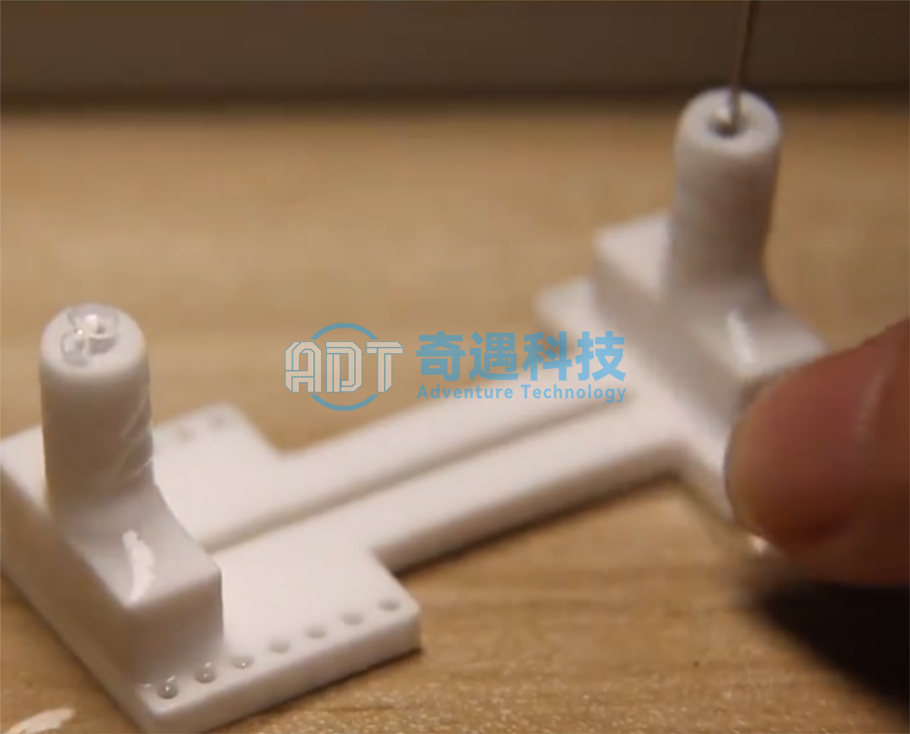
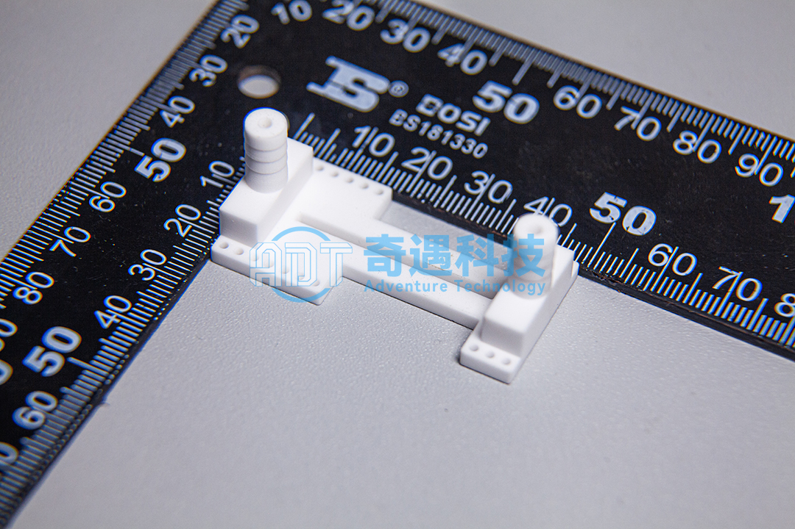
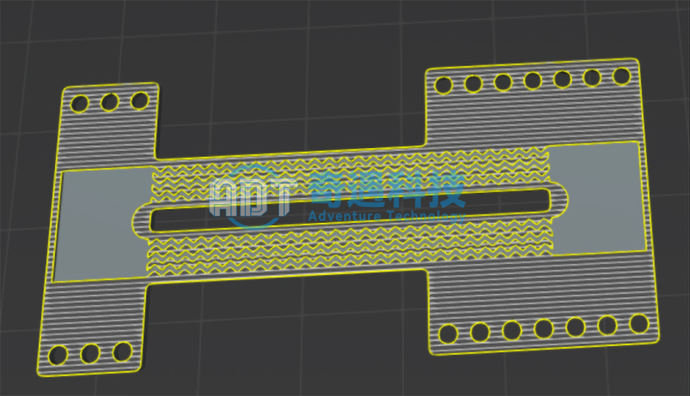
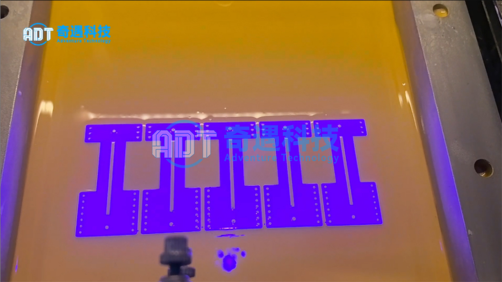

Designing ceramic microfluidic structures is easy — at least in 3D design. In practice, most designs don’t fail because they are wrong; manufacturing is where they break down.
Internal channels can be impossible to machine, closed cavities trap residual material, and thin ceramic walls often deform during sintering. As internal networks become more complex, the success rate of producing functional parts drops sharply.
For years, this has been a key bottleneck in advanced ceramic manufacturing. Traditional processes work for simple geometries, but enclosed multi-channel structures introduce severe challenges such as tooling limitations, demolding issues, shrinkage, and channel blockage.
As a result, many promising microfluidic designs never move beyond simulation. While they perform well in 3D design, conventional manufacturing cannot reliably reproduce their internal complexity with sufficient precision or structural stability.
This is where DLP ceramic 3D printing changes the equation. It enables the fabrication of highly complex internal channel networks as fully integrated ceramic structures — without molds, assembly, or bonding steps.
For applications requiring high temperature resistance, chemical stability, or precise fluid control, this shift fundamentally expands what is manufacturable.

High-Precision Alumina Microchannel Component (DLP Printed)
The component shown above demonstrates a real-world example of a DLP 3D printing process used to manufacture an integrated alumina ceramic microfluidic structure.
The part is produced using high-purity alumina ceramic through a photopolymer-based ceramic additive manufacturing workflow.
Its dimensions measure 4.7 cm × 2.4 cm × 3.0 cm, but the real complexity lies inside the structure rather than outside it.

Embedded within the ceramic body is a highly interconnected microchannel network designed for controlled fluid transport.
To verify functionality, liquid was injected through one inlet while stable outflow was observed from another outlet. The successful flow test confirmed both channel continuity and structural integrity after printing and post-processing.
What makes this structure particularly interesting is that it does not rely on a simple straight-through channel layout.
Instead, the internal geometry distributes fluid across multiple interconnected pathways simultaneously. This type of architecture opens the door to more advanced flow management strategies inside compact ceramic devices.
In practical applications, this could support controlled flow distribution, localized flow-rate variation, or multi-inlet and multi-outlet fluid handling within a single microfluidic ceramic component.
For future lab-on-chip systems and miniature chemical processing devices, that level of integration is extremely valuable.
From Digital Design to Functional Ceramic Component
Producing this type of ceramic microchannel structure requires far more than simply printing a shape.
Every stage of the manufacturing workflow must be carefully controlled, especially when working with brittle materials like alumina ceramics.
3D design Modeling – Designing Internal Fluid Logic
Everything begins with digital design.
Engineers first create a fully enclosed 3D model that defines not only the external geometry, but also the internal fluid behavior of the component.
At this stage, channel dimensions are designed with micron-level precision to ensure stable connectivity throughout the structure.
Flow paths must be carefully balanced. Even small geometric inconsistencies can affect pressure distribution or create dead zones inside the device.
Structural reinforcement is also integrated directly into the 3D design model to reduce deformation risks during debinding and sintering.
For complex alumina ceramic microfluidics, the success of the final component is often determined long before printing even begins.

DLP 3D Printing – Layer-by-Layer Photopolymerization
Once the model is finalized, the design is transferred into a printable ceramic slurry system.
Using DLP 3D printing, UV light selectively cures ceramic-filled resin layer by layer, gradually building the green ceramic body from the bottom up.
This approach offers a major advantage over traditional ceramic manufacturing.
Because the geometry is formed through optical projection rather than mechanical tooling, highly complex enclosed channels can be fabricated without the machining restrictions normally associated with ceramics.
Fine internal features can also be reproduced with excellent dimensional consistency, which is critical for maintaining channel continuity in advanced ceramic microfluidic devices.
This is where conventional manufacturing methods begin to reach their limits — while DLP ceramic 3D printing continues to expand design freedom.

Green Body Inspection – Before Sintering Validation
Before entering the furnace, the ceramic green body must pass a final validation stage.
Engineers inspect the component for channel continuity, dimensional accuracy, and structural consistency.
In some cases, preliminary flow testing is performed before sintering to verify that internal pathways remain fully open.
This step is important because once the part is sintered into a dense ceramic body, correcting internal defects becomes nearly impossible.
Only components that pass inspection proceed to final firing, where they are transformed into fully dense functional ceramic devices.
Why DLP Ceramic Printing Matters
The importance of DLP ceramic 3D printing goes far beyond manufacturing convenience.
What it really offers is a new level of geometric freedom for functional ceramics.
Instead of simplifying designs to accommodate tooling limitations, engineers can now optimize internal structures based on actual performance requirements.
That changes how ceramic devices are designed from the very beginning.
Monolithic internal channels can be produced without assembly. Complex flow networks can be integrated directly into a single ceramic body. And highly customized designs can move from 3D design to functional prototype much faster than before.
For industries working in microfluidics, advanced filtration, energy systems, and chemical processing, this represents a major shift in manufacturing capability.
Final Thoughts
For a long time, the biggest limitation in ceramic microfluidics was never the design itself.
It was manufacturability.
Engineers could design highly sophisticated internal flow systems in 3D design, but translating those geometries into real ceramic components remained extremely difficult using conventional methods.
Now, that limitation is beginning to disappear.
With the continued advancement of ceramic 3D printing and DLP ceramic additive manufacturing, structures that once required assembly, compromise, or impossible tooling strategies can increasingly be produced as single integrated ceramic parts.
For engineers developing next-generation fluidic systems, the question is no longer whether complex ceramic channels can be manufactured.
The question is how much design freedom is now possible.
Looking for a professional ceramic 3D printing solution?
ADT provides:
DLP ceramic 3D printers
ceramic printing materials
Ceramic 3D printing services
Contact us to discuss your application.